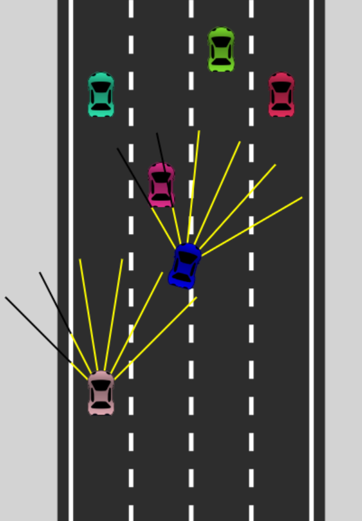
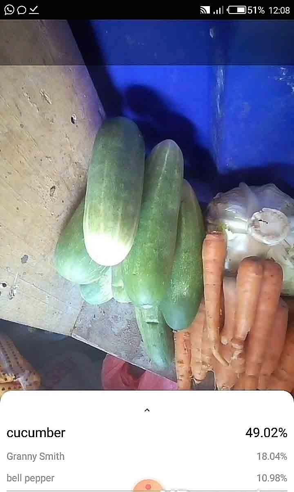

Joana Konadu Owusu
Joana Konadu OwusuComputer Vision • Deep Learning • Assistive Technology
A Computer Vision and Deep Learning Researcher
I am a Master in Computer Science student at the University of Wyoming working with Dr. Shivanand Venkanna Sheshappanavar in the Geometric Intelligence Research Lab. My work focuses on computer vision and deep learning for assistive technology, healthcare, and education.
Recent News
Projects
A few featured projects are highlighted below. More can be found on my projects page.

Self Driving Car Simulation
A self-driving car simulation built with a feed-forward neural network, fitness-based search, and genetic algorithms to detect collisions and learn better paths.
Visit Live Site
A Mobile App for the Visually Impaired
A mobile application that integrates computer vision and deep learning methods to support visually impaired users in real-world settings.
Visit RepoWork Experience
See more details on my CV or LinkedIn.
Graduate Research Assistant
Geometric Intelligence Research Lab - EECS
University of Wyoming
August 2024 - Present
- Improve and develop VLM (Image, Video and 3D) and LLM models for assistive technologies, healthcare and autonomous driving.
- Optimize and enhance efficiency of models and design hardware wearable IoT devices for persons with disabilities
- Assisted in mentoring undergraduate students during REU NSF funded summer program
Software Development Specialist
Inclusive Tech Group
August 2020 - Present
A member of the product development team coordinating the design, development, testing, and implementation of assistive technology products for persons with disabilities. Learn more.
IT Coordinator
GES - Asuoso Community Senior High School
November 2021 - 2024
- Administered and maintained school database systems and networks.
- Performed network and system administration tasks on Windows Server and SAP software.
- Improved system performance through proactive IT policy implementation.
Research & Administrative Assistant
Institute of Research, Innovation and Development - Kumasi Technical University
October 2020 - November 2021
Contributed to multidisciplinary research projects on food transportation and security in Ghana, perceptions of COVID-19 vaccines among staff and students, and the rise of street child begging in cities.
Education
University of Wyoming
Doctor of Philosophy (PhD) Computer Science, June 2026 - Present
GPA 4.0
University of Wyoming
Master of Science (MSc) Computer Science, August 2024 - May 2026
GPA 4.0
University of Mines and Technology
Bachelor of Science (BSc) Computer Science & Engineering, 2016 - 2020
GPA 3.6
Courses
Skills
Languages: Python, C++, Java, JavaScript, SQL
ML / CV Tools: PyTorch, TensorFlow, OpenCV
Systems: Linux, Git, Docker, Slurm
Focus Areas: Computer Vision, Deep Learning
Research
My research explores computer vision, object counting, and 3D scene understanding. Find more on my research page.